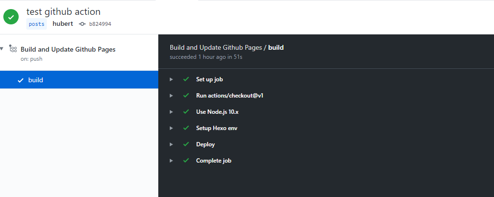

基本概念
GitHub Actions 的一些术语。
workflow（工作流程）：持续集成一次运行的过程，就是一个 workflow。
job（任务）：一个 workflow 由一个或多个 jobs 构成，含义是一次持续集成的运行，可以完成多个任务。
step（步骤）：每个 job 由多个 step 构成，一步步的执行。
action（动作）：每个 step 可以依次执行一个或多个命令 action 。
workflow 配置文件
GitHub Actions 的配置文件叫做 workflow 文件，存放在代码仓库的 .github/workflows 目录。
workflow 文件采用 YAML 格式，文件名可以任意取，但是后缀名统一为 .yml，比如 anyname.yml。一个库可以有多个 workflow 文件。GitHub 只要发现 .github/workflows 目录里面有 .yml 文件，就会自动运行该文件。
workflow 文件的配置字段非常多，详见 官方文档 。下面是一些基本字段。
- name
name字段是workflow的名称。如果省略该字段，默认为当前workflow的文件名。1
name: GitHub Actions Deploy Demo
on
on字段指定触发workflow的条件，通常是某些事件。1
on: push
上面代码指定，
push事件触发workflow。on字段也可以是事件的数组。1
on: [push, pull_request]
上面代码指定，
push事件或pull_request事件都可以触发workflow。完整的事件列表，请查看官方文档。除了代码库事件，GitHub Actions 也支持外部事件触发，或者定时运行。
on.<push|pull_request>.<tags|branches>
指定触发事件时，可以限定分支或标签。1
2
3
4on:
push:
branches:
- master上面代码指定，只有
master分支发生push事件时，才会触发workflow。
jobs.<job_id>.name
workflow文件的主体是jobs字段，表示要执行的一项或多项任务。jobs字段里面，需要写出每一项任务的job_id，具体名称自定义。job_id里面的name字段是任务的说明。1
2
3
4
5jobs:
my_first_job:
name: My first job
my_second_job:
name: My second job上面代码的
jobs字段包含两项任务，job_id分别是my_first_job和my_second_job。
jobs.<job_id>.needs
needs字段指定当前任务的依赖关系，即运行顺序。1
2
3
4
5
6jobs:
job1:
job2:
needs: job1
job3:
needs: [job1, job2]上面代码中，
job1必须先于job2完成，而job3等待job1和job2的完成才能运行。因此，这个workflow的运行顺序依次为：job1、job2、job3。
jobs.<job_id>.runs-on
runs-on字段指定运行所需要的虚拟机环境。它是必填字段。下面代码指定虚拟机环境为
ubuntu-18.04。1
runs-on: ubuntu-18.04
目前可用的虚拟机如下:
| Virtual environment | YAML workflow label |
|---|---|
| Windows Server 2019 | windows-latest |
| Ubuntu 18.04 | ubuntu-latest or ubuntu-18.04 |
| Ubuntu 16.04 | ubuntu-16.04 |
| macOS Catalina 10.15 | macOS-latest |
jobs.<job_id>.steps
steps字段指定每个Job的运行步骤，可以包含一个或多个步骤。每个步骤都可以指定以下三个字段。jobs.<job_id>.steps.name：步骤名称。
jobs.<job_id>.steps.run：该步骤运行的命令或者 action。
jobs.<job_id>.steps.env：该步骤所需的环境变量。下面是一个完整的
workflow文件的范例。1
2
3
4
5
6
7
8
9
10
11
12
13
14
15
16name: Greeting from Mona
on: push
jobs:
my-job:
name: My Job
runs-on: ubuntu-latest
steps:
- name: Print a greeting
env:
MY_VAR: Hi there! My name is
FIRST_NAME: Mona
MIDDLE_NAME: The
LAST_NAME: Octocat
run: |
echo $MY_VAR $FIRST_NAME $MIDDLE_NAME $LAST_NAME.上面代码中，
steps字段只包括一个步骤。该步骤先注入四个环境变量，然后执行一条Bash命令。
实例：自动部署 Hexo
配置 Hexo
如何安装及配置 Hexo, 请自行查询 官方文档。
建议先在本地跑通部署到 Github Pages 以后再继续。
配置完成后，把 _config.yml 里 deploy 的 repo 地址换成 SSH 地址（仓库页面 Clone and Download - Use SSH 里的地址），以便后面用密钥 push 到仓库。
配置仓库及 key
在本地生成一个 key：
1 | ssh-keygen -t rsa -b 4096 -C "user@github.com" -f ~/.ssh/github-actions-deploy |
也可以生成其他种类的 key，如果用上面的命令，需要修改一下用户名
在新仓库的 Settings -> Secrets 里添加刚刚生成的私钥，名称为 github_actions_deploy。
然后在 Github Pages 的仓库，Settings -> Deploy keys 添加刚刚生成的公钥，名称随意，但要勾选 Allow write access。
给源码仓库添加 Actions 配置
如果在网页编辑配置文件的话，选择 Set up a workflow yourself。 如果是在本地目录提交配置文件的话，将配置文件存至 .github/workflows/*anyname*.yml。
1 | name: Deploy Github Pages |
- 注意修改成你自己的 github
nameandemail - 这里监听的是
posts分支的push事件 env可以设置这一步的环境变量，这一步设置的变量不会继承到下一步;secrets.github_actions_deploy中github_actions_deploy是 Settings -> Secrets 中设置的名字，使用双括号读取。刚才设置的私钥环境变量可以通过$获取到，具体见 文档。另外直接将密钥echo出来会被打码- 在网页上保存私钥很可能会把
key存成CR-LF换行模式的，而私钥文件要求LF模式，要用tr -d '\r'去掉回车符
开始构建
配置好了，commit & push 后在网页查看 build 状态：

成功
参考
- Next: Typescript中强大的类型别名